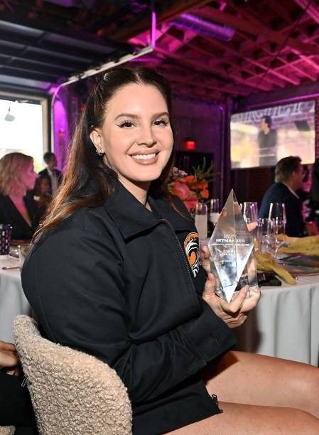
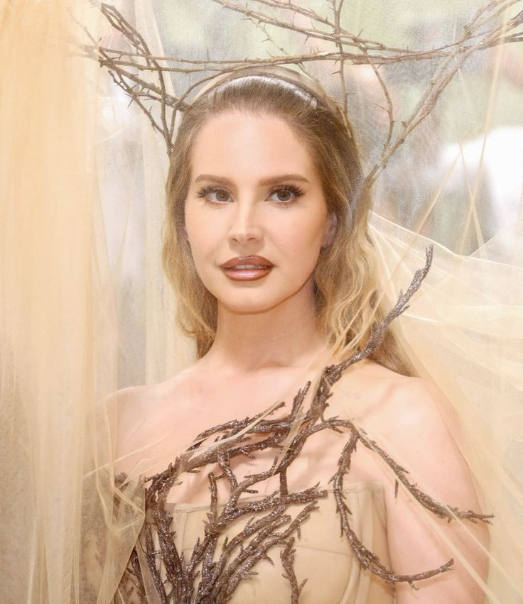

Achievements
Awards and Nominations
Grammy Awards: Nominated for six Grammy Awards, including Album of the Year for "Norman Fucking Rockwell!" and Best Pop Vocal Album. BRIT Awards: Won the International Female Solo Artist award in 2013. MTV Awards: Won the MTV Europe Music Award for Best Alternative in 2012 and 2015. Won the MTV Video Music Award for Best Cinematography for "Ride" in 2013. Ivor Novello Awards: Received the award for Best Contemporary Song for "Video Games" in 2012.
Critical Acclaim:
Album Success: "Born to Die" achieved multi-platinum status and has sold over 10 million copies worldwide. "Norman Fucking Rockwell!" was critically acclaimed, making numerous year-end and decade-end best album lists. Chart Performance: Multiple albums have topped the charts in various countries, including the U.S., UK, and Australia. "Summertime Sadness" (Cedric Gervais Remix) reached the top 10 on the Billboard Hot 100.
Cultural Impact
Influence on Music: Del Rey has inspired a new wave of artists with her unique style, blending elements of indie pop, rock, and cinematic music. Fashion and Style Icon: Known for her vintage Hollywood glamour, Del Rey's style has influenced fashion trends and has been featured in numerous high-profile magazines like Vogue and Harper's Bazaar. Film and Television: Her music has been featured in various films and TV shows, further cementing her cultural impact.